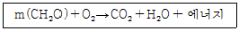
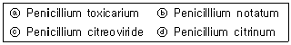

유기농업기사 (2011-06-12 기출문제)
1과목: 재배원론
1. 식물에 대한 옥신의 기능이 아닌 것은?
- 발근 촉진
- 가지의 굴곡 유도
- 낙과방지
- 개화 지연
(정답률: 79%)

2. 파종 후 토양 전면에 살포하는 제초제로만 나열된 것은?
- paraquat, glyposate, bialaphos
- butachlor, simazin
- 2,4-D, bentazone, diquat
- 2,4-D, diquat, beno, alachlor sulfuron
(정답률: 42%)
3. 다음 중 종자의 수명이 가장 짧은 작물은?
- 클로버
- 앨펄퍼
- 메밀
- 토마토
(정답률: 알수없음)
4. 내습성이 가장 약한 작물로만 나열된 것은?
- 벼, 택사, 미나리
- 밭벼, 옥수수, 율무
- 감자, 고추, 메밀
- 당근, 양파, 파
(정답률: 알수없음)
5. 단위 면적당 작물의 수량을 최대로 올릴 수 있는 가장 이상적인 조건은?
- 유전성과 환경조건이 좋아야한다.
- 유전성, 환경조건, 재배기술이 균형 있게 형성되어야 한다.
- 재배기술이 발달하고, 지대, 자본이 충분하여야 한다.
- 환경조건이 우수하고, 재배기술과 토지자본이 충족되어야 한다.
(정답률: 100%)
6. 냉해의 작용기구가 아닌 것은?
- 인산, 가리 등양분의흡수 저해
- 물질의 동화전류저해
- 질소동화가 저해되어 암모니아의 축척 감소
- 원형질 유동의 감퇴
(정답률: 알수없음)
7. 다음 화학식은 식물에서 어떤 생리작용을 나타낸 것인가?

- 증산작용
- 동화작용
- 호흡작용
- 동화 및 호흡작용
(정답률: 73%)
8. 육묘의 필요성에 대한 설명으로 틀린 것은?
- 딸기, 고구마 등에서는 직파하면 이식하는 것보다 생육이 불리하다.
- 벼를 이앙하여 재배하면 맥류와 1년2작이 가능하다.
- 육묘재배가 직파하는 것보다 종자량이 많이 든다.
- 봄 결구 배추를 보온 육묘해서 이식하면 추대현상을 방지할 수 있다.
(정답률: 알수없음)
9. 식물 잎의 노화와 낙엽을 촉진하는 물질은?
- ABA
- 2,4-D
- 지베렐린
- 옥신
(정답률: 90%)
10. 식물체 내의 수분퍼텐셀에 대한 설명으로 옳은 것은?
- 식물체의 수분퍼텐셜은 일반적으로 양(+)의 값이다.
- 삼투퍼텐셜과 압력퍼텐셜이 같으면 원형질분리가 일어난다.
- 삼투퍼텐셜과 압력퍼텐셜이 같으면 팽만상태를 유지한다.
- 식물체내의 수분포텐셜에는 매트릭퍼텐셜은 거의 영향을 미치지 않는다.
(정답률: 55%)
11. 일장효과에 가장 효과적인 광은?
- 400nm 자색광
- 480nm 청색광
- 580nm 황색광
- 660nm 적색광
(정답률: 64%)
12. 유축농업(有畜農業) 또는 혼합농업과 비슷한 뜻이며, 식량과 사료를 서로 균형있게 생산하는 재배형식은?
- 식경(殖耕)
- 원경(園耕)
- 소경(疎耕)
- 포경(圃耕))
(정답률: 알수없음)
13. 방목초지를 조성할 때 몇 가지 목초류 종자를 섞어서 뿌리는 혼파를 하게 되면 여러 가지 이점이 있는데, 다음 중에서 혼파의 이점과 거리가 먼 것은?
- 병충해 방제에 유리하다.
- 벼과 목초와 콩과 목초가 섞이게 도면 가축의 영양상 유리하다.
- 콩과 목초와 벼과 목초를 섞어 뿌리면 질소질 비료가 절약된다.
- 여러 종류의 목초가 함께 생육하면 생장의 소장(消長)이 각기 다르므로 혼파목야지의 산초량이 시기적으로 평준화 된다.
(정답률: 64%)
14. 딸기의 육묘재배시 어린모정(자묘) 생산 방법에 대한 설명으로 틀린 것은?
- 런너(runner) 발생을 촉진하려면 아주심기 후 빠른 활착과 적절한 비배관리를 통하여 새잎의 발생을 촉진시켜야 한다.
- 모주가 액아를 발생시켜 포기나누기를 하게 되면 다량의 런너가 발생하는 경우가 있는데 이러한 경우 우량한 어린모종을 다수 획득할 수있다.
- 모주당 6~7개의 런너를 방생시키고 런너당 3포기의 어린모종을 유인하면 모주 한 개당 약 20여 포기를 확보할 수 있다.
- 턱잎(탁엽)에서 발생하는 런너는 생육이 저조하므로 제거한다.
(정답률: 55%)
15. 작부체계에 대한 설명으로 옳은 것은?
- 고추와 참외는 연작 시 기지현상이 거의 없는 작물이다.
- 객토와 접목은 기지대책이 될 수 없다.
- 노포크(Nofolk)식 윤작은 사료생산에 초점이 맞추어진 윤작방식이다.
- 개량3포식 윤작은 포장의 1/3에 콩과작물을 심는 윤작방식이다.
(정답률: 알수없음)
16. 토양미생물의 여러 가지 활동 중에서 농작물에 해를 끼치는 활동은?
- 무기성분의 산화
- 유리질소의 고정
- 암모니아를 질산으로 변하게 하는 질산화 작용
- NO3-를 환원하여 N2O나 N2로 되게 하는 탈질작용
(정답률: 56%)
17. 식물체에서 옥신의 기능을 옳게 설명한 것은?
- 정아의 생장을 억제시켜 정아우세현상을 유발한다.
- 햇빛을 받은 쪽의 옥신농도가 높아 줄기의 굴광현상을 유발한다.
- 잎에 옥신농도가 높으면 잎자루 기부에 이층이 형성된다.
- 세포벽의 가소성을 증대시켜 확대생장을 촉진한다.
(정답률: 47%)
18. 대기오염물질 중 빗물의 산도를 낮추지 않는 것은?
- 이산화질소
- 염화수소가스
- 아황산가스
- 수소가스
(정답률: 알수없음)
19. 침관수해를 입은 논에서 청고(靑枯)현상이 나타나는 조건은?
- 저수온, 정체수, 청수
- 고수온, 정체수, 탁수
- 저수온, 유동수, 탁수
- 고수온, 유동수, 청수
(정답률: 91%)
20. 벼의 생육단계에 따른 물 관리에서 관개심도를 가장 깊게 해야 하는 시기는?
- 이앙기 ~ 활착기
- 활착기 ~ 분얼성기
- 유수형성기 ~ 수잉기
- 유숙기 ~ 황숙기
(정답률: 28%)
2과목: 토양비옥도 및 관리
21. 토양에 사용한 인산비료의 흡수율은 질소비료에 비하여 매우 낮은데 그 이유로 가장 적합한 것은?
- 인산은 미생물 활동과 번식에 이용된다.
- 인산은 불용성물질로 변화되기 쉽다.
- 인산은 빗물에 의해 쉽게 유실된다.
- 인산은 기체로 변하여 손실될 수 있다.
(정답률: 50%)
22. 토양관리에서는 토양입단율 향상에 목적을 두는 것이 좋다. 다음 중 입단화에 유리한 조건이 아닌 것은?
- 수화도가 큰 이온을 이용한다.
- 클로버 등의 콩과식물을 식재한다.
- 점토함량이 높은 토양으로 객토한다.
- 석회를 시용한다.
(정답률: 84%)
23. 시설원예지 토양은 인산과 각종 염기들이 과량으로 존재하고 있다. 이들 토양을 개량하는 방법으로 가장 거리가 먼 것은?
- 담수하여 염류를 세척한다.
- 객토 하거나 환토한다.
- 부산물 비료의 적극적시용으로 토양비옥도를 증가시킨다.
- 미량원소를 보급한다.
(정답률: 40%)
24. 유기물의 집적이 가장 잘 이루어 질수 있는 토양은?
- 저온다습한 토양
- 배수가 양호한 토양
- 호기성 미생물이 많은 토양
- 지하수위가 낮은 토양
(정답률: 알수없음)
25. 토층의 분화에 의한 토양단면의 특성으로 옳은 것은?
- C층은 풍화작용 및 토양생성 작용을 전혀 받지 않는 층으로 암반층이라고 한다.
- B층은 집적층이라고 하며 A층과 B층 및 B층과 C층이 각각 혼재된 층도 있으며 B+C충에 가까운 특성을 보인다.
- O층은 유기물층으로서 유기물의 원형을 식별할 수 있는 O1층과 식별할 수없는 O2층으로 구분된다.
- A층은 용탈층으로서 작토층을 의미하며 산화물 또는 염기, 부식질 등의 용탈이 대부분 A1층에서부터 일어나기 시작한다.
(정답률: 알수없음)
26. 토성에 대한 설명으로 틀린 것은?
- 토성을 결정할 때 유기물 함량은 고려하지 않는다.
- 토성은 토양의 이화학적 성질에 영향을 미친다.
- 토성은 토양용액의 수소이온 농도에 의존하는 성질이 있다.
- 토성을 결정할 때 자갈의 함량은 고려할 필요가 없다.
(정답률: 알수없음)
27. 공중질소를 고정하는 균류로 독립생활을 하는 혐기성 단독질소고정균의 속명은?
- Azotobacter
- Clostridium
- Rhizobium
- Pseudomonas
(정답률: 알수없음)
28. C/N 비의 크기 순으로 옳게 나열된 것은?
- 호밀껍질(성숙기) ＞ 호밀껍질(수확기) ＞ 부식산 ＞ 곰팡이
- 톱밥＞부식산 ＞호밀껍질(성장기)＞곰팡이
- 톱밥 ＞ 박테리아 ＞ 호밀껍질(성숙기) ＞ 호밀껍질(수확기)
- 톱밥 ＞ 호밀껍질(수확기) ＞ 가축분뇨 ＞ 부식산
(정답률: 38%)
29. 토양의 결정성광물을 확인하는 방법으로 가장 많이 이용되고 있는 방법은?
- X-선회절법
- 적외선분광법
- 시차열분석법
- 유도결합플라즈마분광법
(정답률: 43%)
30. 화강암의 주요광물은 장석 ＞ 운모 ＞ 휘석 ＞ 각섬석 ＞ 석영의 순으로 풍화된다. 풍화되어 주로 점토분을 만드는 광물은?
- 운모와 각섬석
- 장석과 휘석
- 각섬석과 석영
- 장석과 운모
(정답률: 39%)
31. 질소흡수는 저해되지 않으나 칼륨성분은 저해가 많이 일어나는 논토양의 유형은?
- 습답
- 염해답
- 미숙답
- 사질답
(정답률: 10%)
32. 입자밀도(particle density)와 용적밀도(bulk density)가 각각 2.0g/cm3, 1.5g/cm3 인 토양이 지닐 수 있는 포화수분 함량은?
- 1.00m3/m3
- 0.75m3/m3
- 0.50m3/m3
- 0.25m3/m3
(정답률: 46%)
33. 토양생성에 관여하는 주요 5가지 요인으로만 나열된 것은?
- 모재, 부식, 기후, 수분, 지형
- 모재, 지형, 식생, 부식, 기후
- 모재, 기후, 시간, 지형, 부식
- 모재. 지형. 기후, 식생, 시간
(정답률: 알수없음)
34. 토양수분 증발의 억제수단이 아닌 것은?
- 비닐이나 종이로서 피복을 하여준다.
- 지표면을 얇게 메어준다.
- 잡초를 제거한다.
- 바람유통이 원활하도록 한다.
(정답률: 47%)
35. 탈질균에 대한 설명으로 옳은 것은?
- 유기물에 대한요구도가 높다.
- 질소원으로 NH4+ 이온을 사용한다.
- 호기성 조건하에서 생육하는 미생물이다.
- 화학적 또는 광화학적으로 에너지를 획득한다.
(정답률: 42%)
36. 최근에 부숙 돈분뇨 액비화 과정과 토양시용에서 그 함량이 높아 문제가 되었던 중금속은?
- 구리
- 카드뮴
- 수은
- 니켈
(정답률: 47%)
37. 단독으로 질소를 고정하는 미생물이 아닌 것은?
- 남조류
- 클로스트리듐
- 아조토박터
- 뿌리혹균
(정답률: 17%)
38. 퇴적 양식으로 구분할 때 우리나라 논토양은 대부분 어디에 해당하는가?
- 잔적토
- 충적토
- 풍적토
- 빙적토
(정답률: 65%)
39. 형태론적 토양분류체계에서 주로 화산분출에 의해 형성된 화산회토양을 의미하는 토양목은?
- Andisol
- Aridisol
- Oxisol
- Histosol
(정답률: 알수없음)
40. 양분의 시비효율이 낮으면 발생하는 문제가 아닌 것은?
- 환경오염률이 높아진다.
- 수확량이 줄어든다.
- 양분수지가 작아진다.
- 양분집적 등 문제가 생길 수 있다.
(정답률: 39%)
3과목: 유기농업개론
41. 염류집적이 심한 시설원예지에서 적극적인 염류제거 방법으로 거리가 먼 것은?
- 내염성품종 재배
- 심층배수
- 객토
- 답전윤환재배
(정답률: 62%)
42. 유작의 기능이 아닌 것은?
- 토양 유기물의 공급과 유지
- 토지이용률 향상
- 토양양분의 균형 유지
- 질소 천연공급량의 감소
(정답률: 80%)
43. 벼가 병충해에 저항성을 가지려면 건실하게 자라야 한다. 다음 중 벼가 건실하게 자라는데 가장 유리한 조건은?
- 광합성 증대를 위해 엽면적지수가 가능한 한 커지도록 재배한다.
- 광합성 증대를 위해 벼 군락의 상위엽을 가능한 한 크고 두껍도록 재배한다.
- 광합성량을 크게 하기보다 순생산량이 커지도록 하는 것이 좋다.
- 벼의 공급기관(source)-수용기관(sink) 관계에서 공급기관의 비중이 커지도록 재배한다.
(정답률: 30%)
44. 친환경농업과 가장 거리가 먼 용어는?
- 순환농업
- 지속적농업
- 생태농업
- 관행농업
(정답률: 54%)
45. 유기재배 사과밭에 발생한 응애를 제어하려 할 때 사용할 친환경자재로 가장 적합한 것은?
- 보르도액, 구리염
- 맥반석, 규산나트륨
- 님(Neem) 제재, 기계유제
- 탄산칼슘, 요소
(정답률: 85%)
46. 녹비작물로 적합하지 않은 작물은?
- 자운영
- 클로버류
- 브로클리
- 배치류
(정답률: 알수없음)
47. 유기성 폐자원으로 다음 중 칼리질(K2O5) 성분이 가장 높은 것은?
- 우분
- 돈분
- 톱밥
- 볏짚
(정답률: 34%)
48. 유기농업의 방향 방안으로 거리가 먼 것은?
- 유기농산물에 대한 홍보강화
- 소규모 농가의 독자적 유기농 실시장려
- 유기농업 지원체제의 강화
- 유기농산물의 유통 활성화
(정답률: 74%)
49. 유기농업의 발생 배경으로 거리가 먼 것은?
- 선진농업국가의 식량과잉 생산
- 환경오염통제의 대두
- 고품질 농산물 수요 증가
- 농업의 생산성 향상 필요성 감소
(정답률: 62%)
50. 다음 유기물 자원 중 C/N율이 가장 낮은 것은?
- 볏집
- 톱밥
- 갈대
- 유박
(정답률: 알수없음)
51. 국내에서 생산되는 사료작물 중 월동 사료작물이 아닌 것은?
- 수단그래스
- 총체보리
- 호밀
- 이탈리안 라이그래스
(정답률: 알수없음)
52. 이상적인 유기축산의 육종방향이 아닌 것은?
- 지속적 생산과 긴수명
- 병에 대한 저항성
- 높은 번식력
- 수정란 이식 등 생명공학을 이용한 품종 육성
(정답률: 82%)
53. 혼작의 장점이 아닌 것은?
- 잡초 경감
- 도복 용이
- 토양 비옥도 증진
- 재배 및 병충해에 대한 위험성 분산
(정답률: 46%)
54. 제초에 의존하지 않고 잡초를 방제하는 방법으로 가장 거리가 먼 것은?
- 토층에 묻혀있는 잡초의 밀도를 낮추는 일은 잡초 예방법으로 중요하다.
- 지표면에 조사되는 청색광을 차단하면 잡초발아가 억제된다.
- EM당밀을 살표하면 잡초 발아가 억제된다.
- 잡초 발생량이 허용한계밀도도 이하이면 방제에 많은 노력과 비용을 들이지 않는 것이 경제적이다.
(정답률: 알수없음)
55. 특정한 물질을 분비하여 주위 식물의 발아와 생육을 억제시키는 작물은?
- 식충작물(insectivorous crop)
- 보육작물(nurse crop)
- 주작물(main crop)
- 타감작물(allelopathic crop)
(정답률: 84%)
56. 태양열을 이용한 하우스 밀폐처리로는 방제효과를 얻기 어려운 병해충은?
- 상추 시들음병
- 토마토 갈색뿌리썩음병
- 토양 선충
- 토마토 모자이크병
(정답률: 50%)
57. 화학합성농약의 과다 사용에 따른 부작용이 아닌 것은?
- 자연생태계의 파괴
- 토양과 수질오염
- 천적의 보호로 해충방제가 용이
- 농산물에 잔류된 독성의 피해
(정답률: 95%)
58. 토양미생물의 작용에 대한 설명으로 틀린 것은?
- 식물과 상호영향을 끼치며 번식 생존해 간다.
- 각종 무기물의 흡수와 순환에 중요한 역할을 한다.
- 미생물간의 길항작용을 한다.
- 병해를 일으키지는 않고 예방작용만 한다.
(정답률: 91%)
59. 유기 수도작에서 고품질 품종 중 조생종에 해당되지 않은 것은?
- 일품벼
- 상미벼
- 오대벼
- 태봉벼
(정답률: 16%)
60. 착유용, 큰소비육 후기용, 비육돈 출하용, 육계 출하용 유기배합사료에 검출되지 않아야 하는 것은?
- 활성탄
- 벤토나이트
- 모넨산 나트륨
- 갈락토올리고당
(정답률: 47%)
4과목: 유기식품 가공.유통론
61. 농산물 유통 시 고려해야 하는 특성이 아닌 것은?
- 계절에 따른 생산물의 변동성
- 농산물 자체의 부퍠 변질성
- 전국적으로 분산되어 생산되는 분산성
- 짧은 유통경로로 인한 낮은 유통마진율
(정답률: 알수없음)
62. 면류 제조에 대한 설명으로 맞는 것은?
- 면류 제조 시에 부원료별로 콩가루를 사용하는 이유는 콩가루에 들어 있는 글루텐이 반죽에 의하여 면의 탄력성, 점착성, 가소성을 높여주기 때문이다.
- 밀가루는 강력분, 중력분, 박력분의 3가지로 구분할 수 있는데 이는 밀가루 내의 탄수화물 함량으로 등급을 나눈 것이다.
- 염류에 사용하는 소금의 역할은 반죽의 점탄성을 강하게 해줄뿐 아니라. 수분 활성의 저하를 통해 반죽이나 생면의 보존성을 높여준다.
- 밀가루 반죽의 적정온도는 밀가루의 종류, 가수량, 가열량에 관계없이 온도가 낮을수록 반죽의 유동성이 높아진다.
(정답률: 60%)
63. 포장이 적절하지 못한 식품을 동결하여 저장할 경우 식품표면에 발생하는 냉동해와 관련 있는 물리 현상은?
- 용해
- 기화
- 승화
- 액화
(정답률: 55%)
64. 고체식품 원료로부터 유용한 성분을 추출 하고자 할 때 입자를 잘게 절단하는 이유는?
- 용매흡수 촉진에 의한 침전방지
- 용매흡수 지연에 의한 입자간 결합 방지
- 표면적 감소에 의한 추출속도 증가
- 표면적 증가에 의한 용매접촉 면적 증가
(정답률: 73%)
65. 원가의 3요소가 아닌 것은?
- 재료비
- 노무비
- 감가상각비
- 경비
(정답률: 63%)
66. 다음 중 살균력이 가장 강한 자외선 파장 범위는?
- 150 ~ 160nm
- 200 ~ 210nm
- 250 ~ 260nm
- 300 ~ 310nm
(정답률: 62%)
67. 황변미 독소를 생산할 수 있는 곰팡이로 짝지어진 것은?

- ⓐ, ⓑ, ⓒ
- ⓑ, ⓒ, ⓓ
- ⓐ, ⓒ, ⓓ
- ⓐ, ⓑ, ⓓ
(정답률: 59%)
68. 생유(원유)는 원래 무균임에도 살균공정이 필요한 이유가 아닌 것은?
- 균질화시켜야 하기 때문
- 착유자의 의복에 의해 오염될 수 있기 때문
- 생유는 주변의 냄새를 빨아들이는 성질이 있기 때문
- 착유도구의 위생 상태에 의해 세균이 증식할 수 있기 때문
(정답률: 알수없음)
69. dry sausage에 관한 설명으로 틀린 것은?
- 지방산의 불포화도는 높을수록 좋다.
- 원재료의 pH는 낮은 것이 좋다.
- Salmi와 같은 발효 소시지가 이에 해당한다.
- 장기간 건조하는 특징을 가지고 있다.
(정답률: 알수없음)
70. 진공포장방법에 대한 설명 중 틀린 것은?
- 쇠고기 등 진공포장하면 변색작용을 촉진하게 된다.
- 호흡작용이 왕성한 신선 농산물의 장기유통용으로는 적합하지 않다.
- 가스 및 수증기 투과도가 높은 셀로판, EVA, PE등이 이용된다.
- 포장지 내부의 공기제거로 박피 청과물의 갈변작용이 억제된다.
(정답률: 77%)
71. 친환경농업육성법상 다음 설명 중 틀린 것은?
- 친환경농산물은 생산 방법과 사용 자재 등에 따라 유기농산물과 무농약농산물로 분류한다.
- 친환경농산물의 생산물의 생산을 위한자재의 사용 등에 대한 구체적 기준은 대통령으로 정한다.
- 농림수산식품부장관은 친환경 농업의 육성과 소비자 보호를 위하여 친환경농산물 인증을 할 수 있다.
- 농림수산식품부장관은 친환경농산물 인증에 필요한 인력과 시설을 갖춘 자를 인증기관으로 지정하여 친환경농산물의 인증을 하게 할 수 있다.
(정답률: 80%)
72. 다음 중 유기농 100% 표시를 사용할 수 있는 경우는? (단, 국내 식품의 경우를 말한다.)
- 최종제품에 남아있는 원재료의 95% 이상이 유기농산물인 식품
- 유기농산물 이외에 어떠한 식품 또는 식품첨가물도 최종제품 내에 남아 있지 않는 식품
- 식품에 사용된 원료 중 농산물 100%가 국립농산물품질관리원의 유기농산물 인증을 받은 식품
- 제조공정에서 식품첨가물을 전혀 사용하지 않은 식품
(정답률: 39%)
73. 유기식품 포장재로 부적합한 것은?
- 생물 분해성이 좋은 재질
- 재생이 가능한 자재
- 재생품 자재
- 화학 분해성이 좋은 재질
(정답률: 알수없음)
74. 유기식품 생산에 허용되지 않는 자재는?
- 자연산 탄산칼슘
- 자연생 유기재
- 공장형농법 가금류의 퇴비
- 지렁이, 곤충에서 나온 부식토
(정답률: 알수없음)
75. 시료액을 100배 희석하여 그 중 0.1mL를 표준형판배지에 분주하였더니 230개의 집락이 형성된 경우 시료액 1mL당 세균 수는?
- 2300
- 23000
- 230000
- 2300000
(정답률: 알수없음)
76. 냉장 시 고려해야할 사항으로 틀린 것은?
- 식품의 종류에 따라 냉장온도를 달리한다.
- 과실과 채소의 경우 냉해가 발생되는 온도까지 냉장 온도를 낮게 한다.
- 냉장실 내부온도는 일정하게 유지되어야 한다.
- 육류, 우유 등은 빙결온도 이상에서 미생물 활동을 억제할 수 있는 온도에서 저장한다.
(정답률: 85%)
77. 물적 유통기능 효율 중 공급이 일시적으로 집중되고 수요는 연중 평준화되어 있는 특성을 해소함으로써 발생하는 효용은?
- 형태효용
- 장소효용
- 시간효용
- 소유효용
(정답률: 58%)
78. 천연첨가물에 대한 설명으로 틀린 것은?
- 동물, 식물 등 생물자원 등을 소재로 한다.
- 소재를 추출, 분리, 정제하여 얻을 수 있다.
- 천연의 불용성, 광물성 물질 등은 포함되지 않는다.
- 효소반응에 의해 얻어지는 물질 등도 포함된다.
(정답률: 64%)
79. 신선편이 농산식품의 갈변방지를 위한 처리방법이 아닌 것은?
- 비타민C 첨가
- 오존 처리
- MA(기체조절) 포장
- 가식성 필름 포장
(정답률: 50%)
80. 화학적 식중독에 관련된 연결이 틀린 것은?
- 농약에 의한 중독-스피치온(smithion)-살충제-구토, 발한 등
- 중금속에 의한 중독-카드뮴(Cd)-쌀 등 곡류-신장기능 장애
- 환경오염에 의한 중독-다이옥신(Dioxin)-폐기물 처리-발암, 기형유발
- 포장재에 의한 중독-니트로사민(nitrosamine)-착색, 보존-암 유발
(정답률: 72%)
5과목: 유기농업관련 규정
81. 국내에서 생산된 식품으로 유기가공식품 표시를 할 수 있는 경우는?
- 동일 원재료에 대하여 유기농산물과 비유기농산물을 혼합하여 사용하는 경우
- 방사선조사 처리된 원재료를 사용하는 경우
- 유기농산물을 원재료로 하며, 유기가공식품에 사용하는 용기 · 포장은 재활용이 가능하거나 생물분해성 재질인 경우
- 유전자변현 농산물 또는 식품첨가물을 사용한 원재료인 경우
(정답률: 알수없음)
82. 유기가공품으로 인증을 받은 자가 우수식품 표시방법을 위반하였을 경우 행정처분기준은? (단, 최근 1년간 위반에 한한다.)
- 판매정지 1개월
- 표시사용정지 1개월
- 표시변경명령
- 유기가공식품 인증취소
(정답률: 40%)
83. 친환경농업육성법 시행규칙에 따른 재포장 과정의 인증기준에 관한 설명으로 옳은 것은?
- 식품보존의 목적으로 방사선을 사용 할 수 있다.
- 지정구역에 대한 병해충 관리방법으로 초음파를 사용할 수 있다.
- 품목에 인증종류가 다른 친환경농산물의 종류를 혼합할 수 없다.
- 농산물 세척 등에 사용되는 용수는 농업용수 수질기준에 적합하여야 한다.
(정답률: 14%)
84. 유기식품의 생산 · 가공 · 표시 · 유통에 관한 Codex 가이드라인에서 정하고 있는 가축의 축사 및 방목 조건으로 옳은 것은?
- 산란계는 달걀의 수집이 용이하도록 바닥 공간이 충분히 확보된 넓은 케이지에서 사육해야 한다.
- 관할기관의 승인 없이 송아지를 개별 박스형 우리에 사육하는 것은 허용하지 않는다.
- 축사 바닥은 청결을 유지하기 위해 격자형 구조물로 하되, 평평함을 유지시켜야 한다.
- 토끼는 케이지에서 사육할 수 있다.
(정답률: 알수없음)
85. 유기식품의 생산 · 가공 · 표시 · 유통에 관한 Codex 가이드라인의 유기생산 원칙 중 가축의 영양 측면에서 고려할 사항이 아닌 것은?
- 육용 가금류는 비육단계에 곡류를 먹일 필요가 있다.
- 위가 2개 이상인 가축은 사일리지만 먹일 필요가 있다.
- 초식 가축이 매일 먹는 사료에는 조사료, 생초, 건초, 사일리지가 상당량 함유되어야 한다.
- 가축이 건강과 활력을 유지하기 위해 신선한 물을 마음껏 섭취할 수 있어야 한다.
(정답률: 86%)
86. 유기식품의 생산 · 가공 · 표시 · 유통에 관한 Codex 가이드라인에서 가축이 이용할 수 있는 형태의 사일리지 첨가제와 가공보조제가 아닌 것은?
- 당밀
- 꿀
- 바다소금
- 전체사료 중 4% 이하의 혈분
(정답률: 50%)
87. 유기가공식품에 대한 설명으로 옳은 것은?
- 유기가공식품에 대한 인증을 신청한 자는 식품산업진흥법에서 규정한 제반사항을 준수해야 한다.
- 5% 미만의 유전자변형농산물(GMO) 사용은 허용된다.
- 인증 유효기간이 종료된 후 3년간은 그 가공품을 인증품으로 표시할 수 있다.
- 친환경농산물의 인증을 받아 유기가공식품을 생산하고자 하는 자는 유기가공식품에 대한 인증을 별도로 받을 필요가 없다.
(정답률: 91%)
88. 유기식품의 생산 · 가공 · 표시 · 유통에 관한 Codex 가이드라인이 규정한 농산물들 수입하여 유통 하고자 하는 수입국이 요구할 수 있는 조건에 해당되지 않는 것은?
- 수출국이 적용한 검사/인증 방법과 생산/조제에 관한 규정을 조사하기 위한 현장 방문의 협조
- 소비자들의 혼란방지를위하여수출국에서제품에 표시를하며, 수입국이 시험하고 있는 표시규정보다 수출국의규정이 엄격하다는 정보의 제공
- 수출국에서 적용하는 방법이 Codex 가이드라인의 요건과 일치하는지 여부에 대한 자세한 정보의 제공
- 수입 및 수출국의 정부당국이 상호 동의한 독립적인 전문가에 의해 작성된 보고서를 포함한 자세한 정보
(정답률: 50%)
89. 친환경농업육성법에 따라 농림수산식품부장관 또는 지방자치단체의 장은 농업지원의 보전 및 농업환경의 개선을 위하여 농업자원 및 농업환경 실태조사를 실시하여야 한다. 해당 항목이 아닌 것은?
- 농업용수로 이용되는 지표수와 지하수의 수질
- 친환경농업자재 비용실태, 친환경농산물 생산량
- 농업의 수자원 함량, 토양보전 등 공익적 기능 실태
- 농경지의 비옥도, 중금속, 농약성분, 토양미생물의 변동사항
(정답률: 알수없음)
90. IFOM 이란?
- 세계식량보건기구
- 국제식품관리기구
- 위생식물검역조치의 적용에 의한 협정
- 국제유기농업운동연맹
(정답률: 알수없음)
91. 친환경농업육성법 시험규칙에 의한 농림산물의 인증심사 시 재배포장의 토양 시료 채취에서 논토양의 시료 채취는 지표면으로부터 몇 센티미터 깊이까지의 흙을 채취하여야 하는가?
- 5
- 10
- 15
- 20
(정답률: 65%)
92. 유기가공식품 생산에 있어서 꼭 필요한 재료이나 유기원료를 상업적으로 조달할 수 없는 경우, 제품에서 물과 소금을 제외한 중량비율은 얼마만큼 비유기 원료를 혼합할 수 있는가?
- 50%이하
- 15%미만
- 5%미만
- 첨가할 수 없다.
(정답률: 알수없음)
93. 친환경농자재의 사용기준에 따라 유기농산물의 생산을 위해 사용이 가능한 자재가 아닌 것은? (단, 추출용매는 제외)
- 이산화탄소 및 질소가스
- 기계유제
- 바이오다이나믹제제
- 메틸알콜
(정답률: 40%)
94. 친환경농업육성법 시행규칙의 유기축산물 인증기준에서 동물복지 및 질병관리상 생산물의 품질향상과 전통적인 생산방법의 유지를 위하여 허용되는 것은?
- 뿔자르기
- 물리적 거세
- 꼬리부분에 접착밴드 붙이기
- 생산성 촉진을 위한 호르몬제 사용
(정답률: 알수없음)
95. 식품산업진흥법 시행령에 따라 유기가공식품으로 인증을 받은 식품에 대한 적합성 조사 등 사후관리는 어느 기관으로 위임되어 실시되는가?
- 농림수산식품부
- 국립농산물품질관리원
- 산림청
- 농촌진흥청
(정답률: 75%)
96. 유기농산물과 무농약농산물 인증기준의 구비요건에서 공통사항에 해당되지 않는 것은?
- 유전자변형농산물인 종자를 사용하지 아니하여야 한다.
- 화학비료는 농업기술센터소장이 재배포장별로 권장하는 성분량의 1/3이하를 사용하여야 한다.
- 유기합성제초제는 사용하지 아니하여야 한다.
- 영농관련 자료를 보관하고 국립농산물품질관리원장 또는 인증기관이 열람을 요구하는 때에는 이에 응할 수 있어야 한다.
(정답률: 알수없음)
97. 친환경농산물의 인증품이 인증기준에 맞지 않는 원인이 인증기관의 고의에 의한 것으로 최근 1년간 2회 위반 시 인증기관에 내려질 수 있는 행정처분은?
- 경고
- 업무정지 3월
- 업무정지 6월
- 지정취소
(정답률: 50%)
98. 유기가공식품인증제도 운영 지침에서 규정한 “사업자”에 해당하는 내용은?
- 유기농산물을 생산하는 모든 개인 또는 법인
- 친환경 농산물 생산 판매하는 모든 개인 또는 법인
- 유기농산물 가공공구를 생산, 판매하는 모든 개인 또는 법인
- 유기식품의 제조, 가공 및 유통 등의 사업을 운영하는 모든 개인 또는 법인
(정답률: 64%)
99. 유기식품의 생산, 가공, 표시, 유통에 관한 코덱스가이드라인에서 규정한 유기농산물 생산 시 식품 병해충 방제용 자재 중 인증기관 또는 위임기관의 승인을 받아야 하는 물질은?
- 칼륨 비누
- 웅성 불임곤충
- 페로몬(유인물질)제제
- 약초 및 생물역학적 제제
(정답률: 알수없음)
100. 유기식품의 생산, 가공, 표시, 유통에 관한 코덱스가이드라인에서 정한 가축 및 가축제품의 일반원칙에서 가축이 유기농장의 건전화에 크게 기여하는 이유로 거리가 먼 것은?
- 토양의 비옥도를 유지, 개선한다.
- 방목시 초지의 식물군을 관리한다.
- 농장의 물리적 다양성을 높인다.
- 농장시스템의 다양성을 증진시킨다.
(정답률: 알수없음)